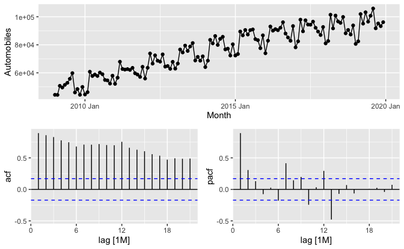
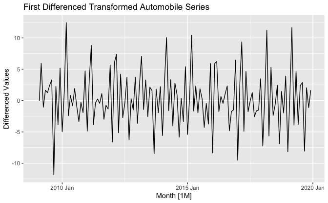
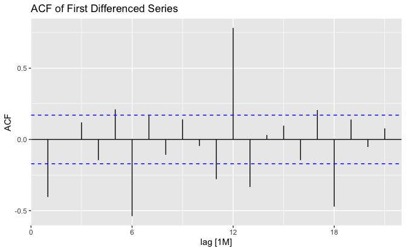
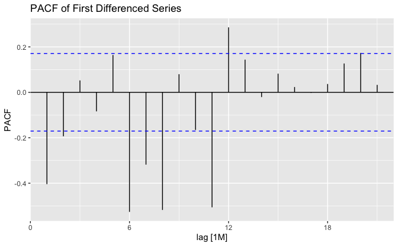
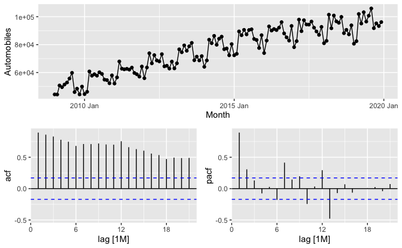
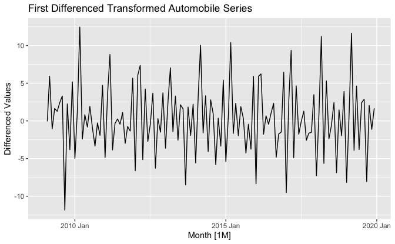
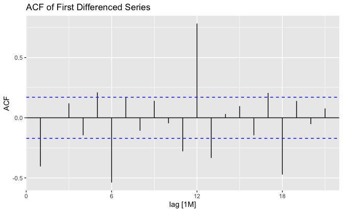
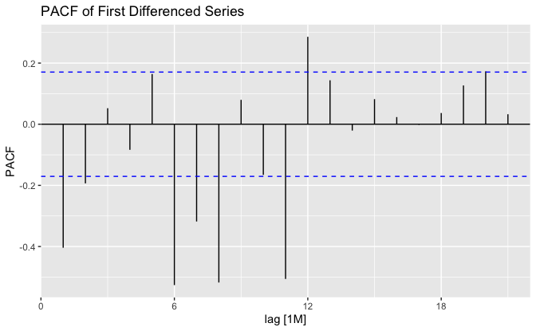

Forecasting & Time Series — Case Study (STAT603)
I compared ETS (SES, Holt, damped Holt, Holt–Winters additive/multiplicative) and ARIMA models on a monthly automobiles series using R with fpp3/tsibble. I used Box–Cox and differencing to stabilise variance/mean, checked ACF/PACF, and evaluated accuracy.
R fpp3 / tsibble ETS ARIMA Time Series CV
← Back to Portfolio Report (PDF) Brief (PDF)
Problem
Model and forecast a monthly series; compare ETS variants (SES, Holt, damped; HW additive vs multiplicative), examine stationarity (ACF/PACF), build ARIMA/seasonal ARIMA, and discuss accuracy and theory (AICc, PI growth, CV).
Data & Tools
Data: monthly automobile counts (tsibble).
R packages: fpp3 (tsibble, feasts, fable), plus base plotting for quick checks.
Workflow: tsibble conversion → EDA → transform/difference → model → residual checks → forecast/accuracy.
Methods
- ETS: SES, Holt’s linear, damped Holt; Holt–Winters additive vs multiplicative seasonality.
- Stationarity: ACF/PACF review; Box–Cox (Guerrero) for variance; differencing for mean.
- ARIMA: proposed seasonal ARIMA via ACF/PACF; compared with
ARIMA()auto-selection; constant/drift check. - Accuracy: in-sample measures and horizon-based error summaries; discussed
accuracy()behaviour on seasonal models.
My Role
- Built all ETS and ARIMA models; set up Box–Cox/differencing decisions from diagnostics.
- Ran seasonal vs non-seasonal comparisons; checked residuals and PI growth with horizon.
- Wrote a clear, reproducible report (code + commentary) and summarised model trade-offs.
Results (highlights)
- Seasonality: Holt–Winters multiplicative captured changing seasonal amplitude better than additive on this series.
- Model selection: Auto-ARIMA selected a seasonal model with drift
(e.g.,
ARIMA(1,0,1)(0,1,2)[12]w/ drift) and achieved lower AIC/AICc than a manual alternative, with lower residual variance. - Short vs long horizon: HW multiplicative was strong short-term; ARIMA with seasonal terms + drift provided the best overall fit by information criteria
- Accuracy notes: Be cautious with scale-dependent metrics and how
accuracy()behaves on seasonal models/data availability.
Screenshots
 







Learnings
- Transform first, then difference: Box–Cox can stabilise variance before differencing; re-check ACF/PACF after each step.
- Seasonality choice matters: multiplicative HW fits level-dependent seasonal swings better than additive.
- Auto vs manual: ACF/PACF give a good starting point, but auto-ARIMA plus residual tests and AICc is a strong baseline.
- Compare fairly: use the same train window; report multiple horizons; consider cross-validation when possible.
- Intervals grow with horizon: especially for non-stationary components; communicate uncertainty clearly.
- Reproducibility: keep code + narrative together; save plots for audit; note seeds and session info.